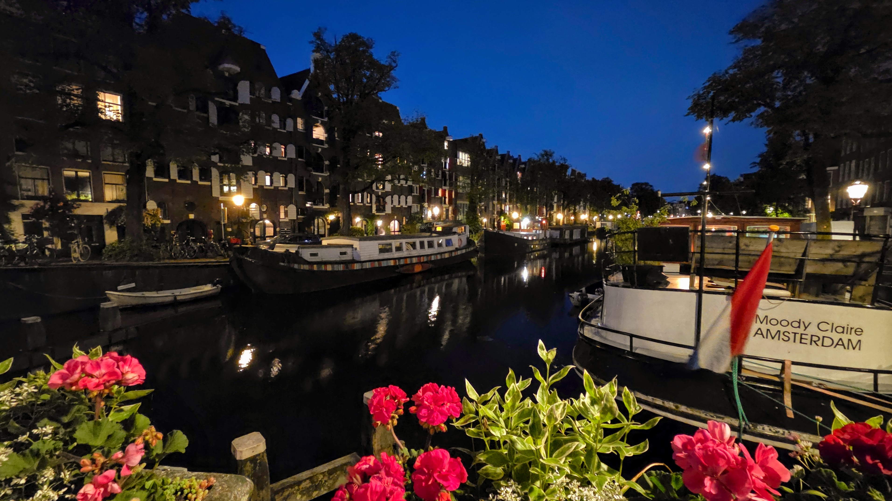
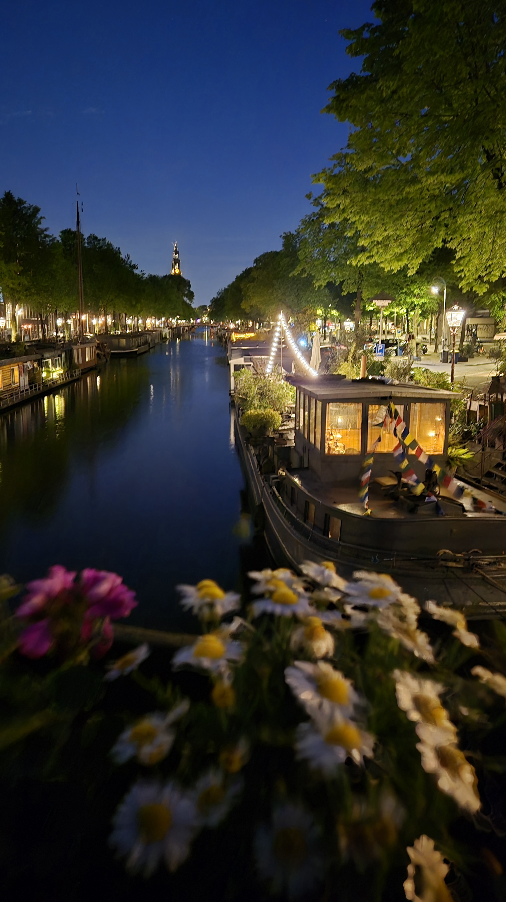
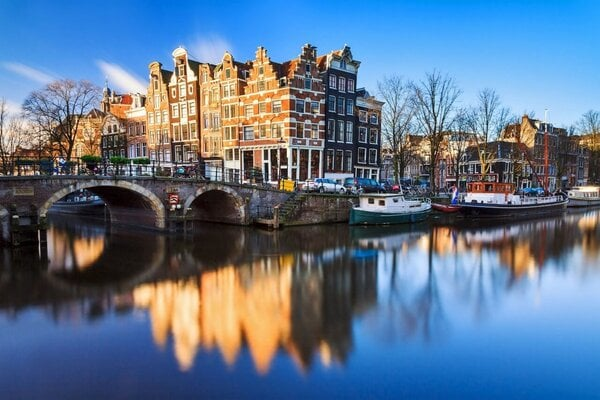
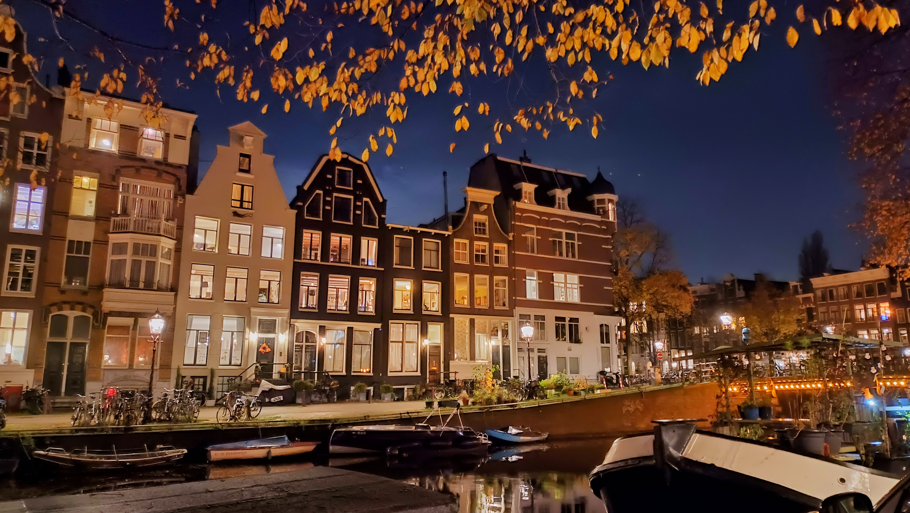
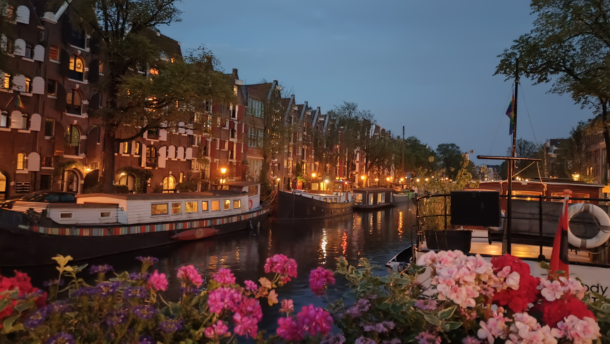

Canal-side
attic apartment
A bright home on the fourth floor, on the edge of the Jordaan — with elevator access, a separate bedroom, a private terrace, and a canal-side Amsterdam atmosphere.
A calm base, in central Amsterdam.
The apartment is on the top floor of a historic building, with beams, sloped ceilings and roof windows that make the space feel unmistakably Amsterdam. It works best for one person or a couple looking for a quiet, well-kept home close to the centre, rather than a hotel-style stay.
The apartment and its settings.
A small visual introduction.




Four stops from Centraal
Public transport is close by, and many central places are walkable. It is a practical location for arriving from Centraal Station, moving around the city, and coming back to a quieter street at the end of the day.
- ·Bus lines 13, 18 & 21 stop directly in front of the entrance
- ·Tram 5 and bus 22 are a very short walk away
- 4stops from Amsterdam Centraal Station
- 20minutes on foot to Dam Square
Have a look around
Take a closer look and see whether my home could be the right fit for a direct exchange.
View the apartment →